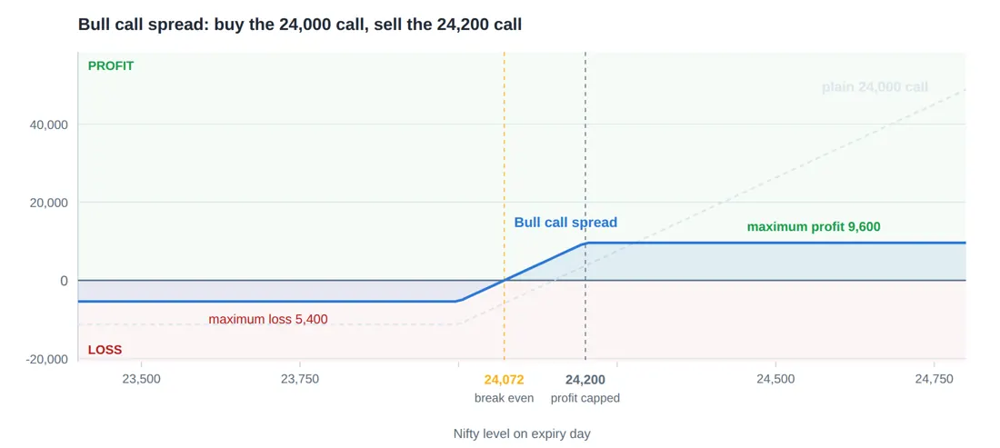
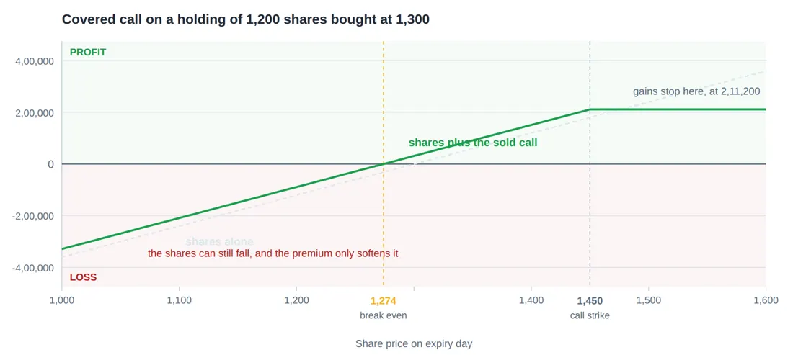
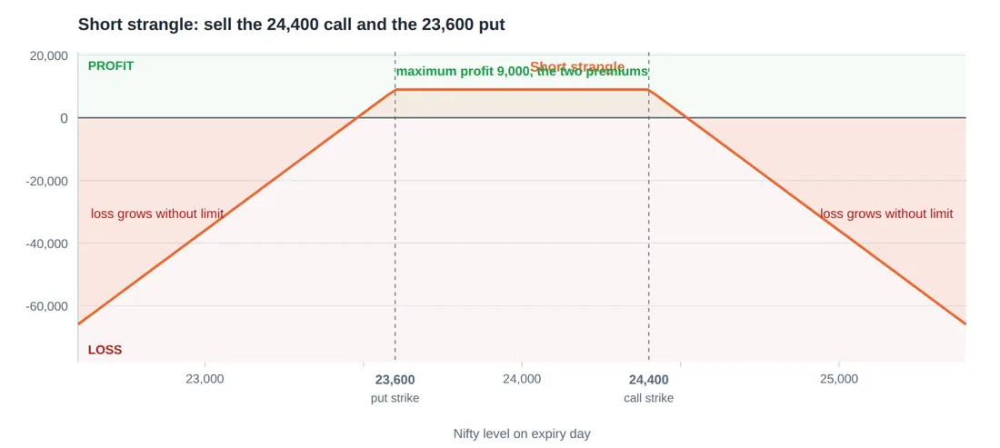
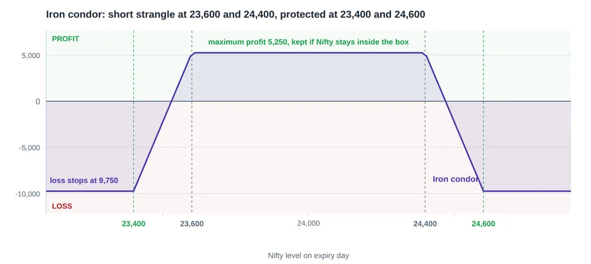
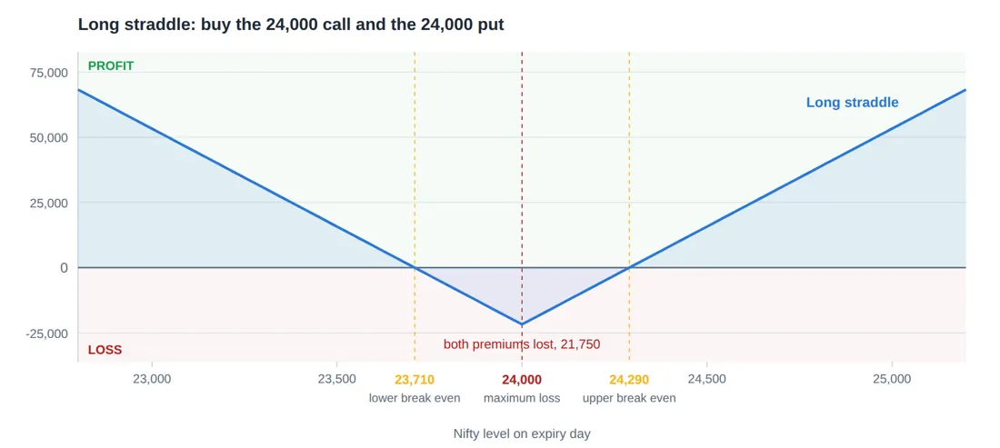

Library / MiyeeStockBuddy: The Complete Guide to Indian Markets
Part 14. Option Strategies, Built From the Four Positions
Every strategy in this part is made of the same four building blocks from Part 10: buy a call, sell a call, buy a put, sell a put. Nothing else exists. The names are just labels for particular combinations, and once you can read a payoff diagram, a strategy you have never heard of takes about thirty seconds to understand.
Throughout this part the working example is Nifty at 24,000 with a lot size of 75, so every rupee figure can be compared directly with every other.
14.1 How To Judge Any Strategy in Five Questions
Question | Why it decides everything | |
|---|---|---|
What is the maximum loss? | If the answer is "unlimited", you need a plan for that before you enter, not after | |
What is the maximum profit? | If it is small and the loss is large, you need a very high win rate to survive | |
Where is break even? | This is the level the market must reach for you to make nothing at all | |
Does time help or hurt me? | Net long options lose to theta daily; net short options collect it | |
What does rising volatility do? | Net buyers gain from it; net sellers are hurt by it | |
The rule to remember If you cannot answer all five before entering, you do not have a strategy, you have a position. Write the five answers down. It takes two minutes and it prevents the specific panic that comes from not knowing what your own trade does. | ||
14.2 Directional Strategies
Buying a call or a put: the simplest, and the hardest to win at
Covered fully in Part 10. Limited loss, large possible gain, and three things must go right: direction, size and timing. It is the position almost every beginner starts with and the one with the worst record.
- Use it when: you expect a sharp move soon, implied volatility is not already elevated, and you can afford to lose the whole premium.
- Avoid it when: you are buying far out of the money because it is cheap, or buying the morning of a scheduled event.
The bull call spread: a call with the top cut off
Buy a call, and sell a further out of the money call on the same expiry. The premium you receive from the sale pays for part of the one you bought. In exchange, you agree to a ceiling on the profit.

Figure 42. Selling a higher strike against the call you bought cuts the cost from 11,250 to 5,400 and lowers the break even by 72 points. The price of that is a ceiling: above 24,200 the position stops earning, however far the index runs.
Bull call spread, priced out Nifty at 24,000. Buy the 24,000 call at 150. Sell the 24,200 call at 78. Net cost = (150 - 78) x 75 = 5,400 (compared with 11,250 for the plain call) Break even = 24,000 + 72 = 24,072 (compared with 24,150 for the plain call) Max profit = (200 - 72) x 75 = 9,600 at 24,200 or above Max loss = 5,400 at 24,000 or below Risk to reward = 5,400 risked to make 9,600, which is about 1 to 1.8 |
Look at what this trade fixed. The cost halved, the break even came down 78 points, and theta hurts far less because the option you sold is decaying in your favour while the one you bought decays against you. The price is that Nifty at 25,000 pays you exactly the same as Nifty at 24,200.
The honest comparison The plain call makes more money in the rare case of an enormous move. The spread makes money far more often, because it needs a smaller move to break even and it bleeds less while it waits. For most people, most of the time, the spread is the better trade. It is also the less exciting one, which is precisely why it is less popular. |
The bear put spread is the identical structure for a fall: buy a put, sell a lower strike put. Same arithmetic, mirrored.
14.3 Income Strategies, and Their Real Cost
The covered call
You already own the shares. You sell a call above the current price. The premium is yours to keep. If the share stays below the strike, you keep the shares and the premium. If it goes above, you must sell at the strike, which caps your gain.

Figure 43. You already own 1,200 shares at 1,300. Selling the 1,450 call brings in 31,200 today. Below 1,450 you keep the shares and the premium; above it you have agreed to sell. The premium lowers your effective cost, it does not remove the risk of the shares falling.
Covered call on a real sized holding You hold 1,200 shares bought at 1,300 each, a position of 15,60,000. The stock is now at 1,300. You sell the 1,450 call for 26 rupees, which brings in 26 x 1,200 = 31,200 today. Stock at 1,250 on expiry: keep the shares and the 31,200. Loss on shares 60,000, softened to 28,800. Stock at 1,400: keep the shares and the 31,200. Total gain 1,51,200. Stock at 1,450: best outcome. Gain 1,80,000 + 31,200 = 2,11,200. Stock at 1,600: you must sell at 1,450. Gain still 2,11,200. the extra 1,80,000 goes to the call buyer. Break even on the whole position falls from 1,300 to 1,274. |
Careful here A covered call is often sold as "free income on shares you already own". It is not free. You have sold your upside for 26 rupees. The month the stock announces something wonderful and gains 30 percent is the month you find out what that cost. It also does almost nothing for your downside. If the stock halves, the 31,200 is a rounding error against the loss. A covered call is a mildly bullish to neutral position, not a hedge. |
The short strangle: high win rate, and the reason people still lose
Sell an out of the money call and an out of the money put on the same expiry. You collect both premiums and keep them all if the index stays between the two strikes.

Figure 44. Selling a call above and a put below collects both premiums and keeps them if the index stays in the corridor. The flat top is the entire profit. The two arms falling away are the reason this trade needs a stop and a strict size limit.
Short strangle, and the week it goes wrong Nifty at 24,000. Sell the 24,400 call at 62 and the 23,600 put at 58. Premium collected = (62 + 58) x 75 = 9,000 Max profit = 9,000, if Nifty finishes between 23,600 and 24,400 Upper break even = 24,400 + 120 = 24,520 Lower break even = 23,600 - 120 = 23,480 Max loss = unlimited on both sides Margin required = roughly 1,50,000 to 2,00,000, and it rises if volatility rises The good weeks: Nifty stays in the range, and you keep 9,000 on about 1,75,000 of margin. The bad week: Nifty gaps to 25,100. The call is worth 700. Loss = (700 - 120) x 75 = 43,500. That is roughly five good weeks, erased in one session, on one lot. |
Why this trade fools people for months It wins perhaps eight or nine times out of ten. Every winning week feels like proof that the method works and that the warnings are for careless people. The losses are not evenly spaced. They arrive in a cluster, usually when volatility has already risen, which is also when margin requirements go up and your broker may square you off at the worst moment. The mathematics is not on your side just because the win rate is. A strategy winning 90 percent of the time and losing five times the average win on the other 10 percent is a losing strategy that takes a year to reveal itself. |
The iron condor: the same trade with the tail cut off
Take the short strangle and buy a further out of the money call above and a further out put below. Those two purchases cost you some of the income and, in exchange, they stop the loss at a known figure.

Figure 45. The iron condor is the short strangle with insurance bought on both wings. The flat profit is smaller, 5,250 rather than 9,000, but the two falling arms now stop. This is the difference between a defined risk and an open one.
Iron condor, all four legs Sell the 24,400 call at 62 Buy the 24,600 call at 26 Sell the 23,600 put at 58 Buy the 23,400 put at 24 Net premium = (62 + 58 - 26 - 24) x 75 = 70 x 75 = 5,250 Max profit = 5,250, if Nifty finishes between 23,600 and 24,400 Max loss = (200 - 70) x 75 = 9,750, and not one rupee more, whatever happens Margin = far lower than the strangle, because the risk is defined Compared with the strangle: you gave up 3,750 of income to convert an unlimited loss into a 9,750 loss. |
The rule to remember That trade, 3,750 of income given up to cap the loss, is the single best decision available to a retail option seller. The strangle earns more in the ordinary months and can end your account in an extraordinary one. The condor cannot. A strategy you can hold through a crisis beats a better looking one that you cannot. |
14.4 Volatility Strategies
The long straddle: betting on movement, not direction
Buy a call and a put at the same strike. You profit if the index moves far enough in either direction. You lose if it sits still.

Figure 46. Buying a call and a put at the same strike is a bet on movement without a view on direction. It costs 21,750 and needs Nifty to travel roughly 290 points either way before it earns anything. If the index sits still, both legs decay together.
Long straddle, and what it actually requires Nifty at 24,000. Buy the 24,000 call at 150 and the 24,000 put at 140. Total cost = 290 x 75 = 21,750 Upper break even = 24,000 + 290 = 24,290 Lower break even = 24,000 - 290 = 23,710 Max loss = 21,750, if Nifty finishes exactly at 24,000 You need roughly a 1.2 percent move, in either direction, just to get your money back. And you need it before theta eats the premium, because both legs are decaying at once. |
Careful here A straddle is a bet on volatility rising or on a large move happening quickly. It is not a way of "covering both sides". Both legs decay, and a market that drifts sideways for a week destroys the position from both ends at the same time. It is also usually bought when everyone expects a big move, which is exactly when both options are most expensive. If you are buying a straddle before a known event, you are paying inflated volatility on both legs and will need a very large move to overcome it. |
Protective put: the only genuine insurance in this part
You hold shares and you buy a put below the current price. The put gains as the shares fall, offsetting the loss. Your downside is capped at the strike, less the premium you paid.
Insuring a portfolio through an uncertain month Portfolio of 18,00,000 tracking the Nifty, with Nifty at 24,000. Buy one lot of the 23,500 put at 120. Cost = 120 x 75 = 9,000, which is 0.5 percent of the portfolio. Nifty falls to 22,500 (down 6.25 percent): Portfolio loses about 1,12,500 Put is worth 1,000 points, gaining (1,000 - 120) x 75 = 66,000 Net loss about 46,500 rather than 1,12,500 Nifty rises to 25,000: Portfolio gains about 75,000 Put expires worthless, costing 9,000 Net gain 66,000. The insurance cost you 9,000 and you would pay it again. |
This is what options were invented for. It is also the least popular use of them among individual traders, because it costs money in the eleven months when nothing happens, and human beings dislike paying for something that turns out not to be needed. That is exactly what insurance is.
14.5 The Strategy Summary Table
Strategy | View | Max loss | Max profit | Time is | |
|---|---|---|---|---|---|
Buy call | Sharply up, soon | Premium | Unlimited | Against you | |
Buy put | Sharply down, soon | Premium | Large | Against you | |
Bull call spread | Moderately up | Net premium | Capped | Roughly neutral | |
Bear put spread | Moderately down | Net premium | Capped | Roughly neutral | |
Covered call | Flat to mildly up | Large, the shares | Capped | For you | |
Protective put | Holding, but nervous | Capped | Large | Against you | |
Short strangle | Nothing much happens | Unlimited | Premium | For you | |
Iron condor | Nothing much happens | Capped | Capped | For you | |
Long straddle | A big move, either way | Both premiums | Large | Strongly against you | |
If you take one thing from this part The four strategies in the middle of that table, the two spreads, the covered call and the iron condor, are where a thoughtful individual should live. Every one of them has a capped loss. The two at the bottom of the loss column, the naked short strangle and the naked short call, are where accounts are destroyed. They are not more sophisticated. They are simply the same trades with the seatbelt removed. | |||||
© Vipin Nair. This guide is for reading online only. Copying, downloading, printing and redistribution are not permitted. For study and general reference; not legal, tax or investment advice.